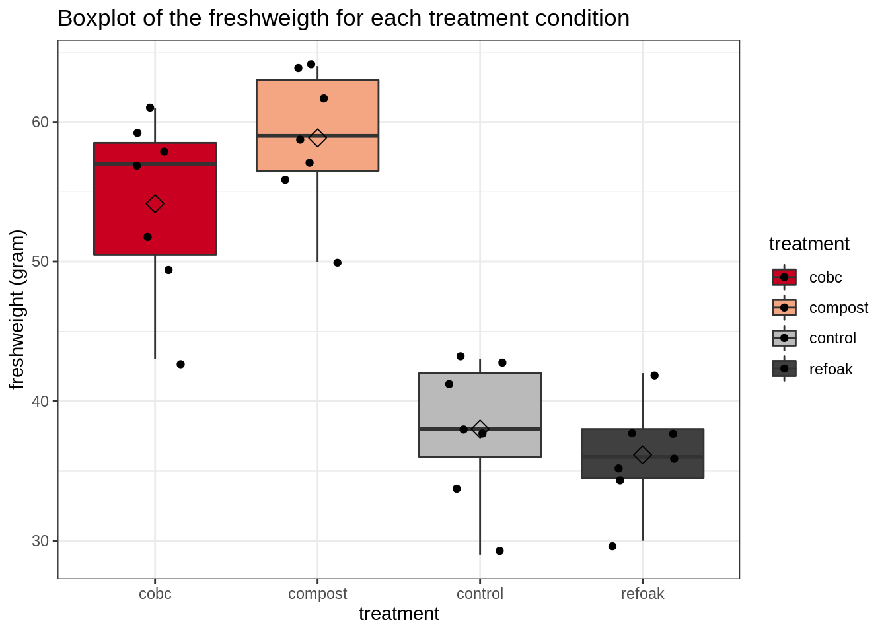

Exercise 9.2: Non-parametric statistics on the lettuce dataset
Lieven Clement and Jeroen Gilis
statOmics, Ghent University (https://statomics.github.io)
1 The lettuce dataset
In a previous tutorial, we analysed the dataset on lettuce plants using ANOVA. However, it was not clear if all the assumptions of ANOVA were met. Indeed, with only 7 datapoints per group, it is very hard to assess the assumptions of normality and equal variances.
Therefore, we will re-analyse the dataset by using the non-parametric alternative to ANOVA, the Kruskal-Wallis test. We will first give a concise overview of what we saw in the ANOVA analysis, which can be found in the ANOVA_lettuce_plants.Rmd file.
The researchers want to find out if biochar, compost and a combination of both biochar and compost have an influence on the growth of lettuce plants. To this end, they grew up lettuce plants in a greenhouse. The pots were filled with one of four soil types;
- Soil only (control)
- Soil supplemented with biochar (refoak)
- Soil supplemented with compost (compost)
- Soil supplemented with both biochar and compost (cobc)
The dataset freshweight_lettuce.txt contains the freshweight (in grams) for 28 lettuce plants (7 per condition).
Load the required libraries
library(tidyverse)
library(car)
library(coin)2 Data import
lettuce <- read_csv("https://raw.githubusercontent.com/statOmics/PSLSData/main/freshweight_lettuce.txt")
# Take a glimpse at the data
glimpse(lettuce)## Rows: 28
## Columns: 3
## $ id <dbl> 1, 2, 3, 4, 5, 6, 7, 8, 9, 10, 11, 12, 13, 14, 1…
## $ treatment <chr> "control", "control", "control", "control", "con…
## $ freshweight <dbl> 38, 34, 41, 43, 43, 29, 38, 59, 64, 57, 56, 50, …# treatment to factor
lettuce <- lettuce %>%
mutate(treatment = as.factor(treatment))3 Data exploration
# Count the number of observations per treatment
table(lettuce$treatment)##
## cobc compost control refoak
## 7 7 7 7Now let’s make a boxplot displaying the freshweight of each treatment condition:
lettuce %>%
ggplot(aes(x = treatment, y = freshweight, fill = treatment)) +
scale_fill_brewer(palette = "RdGy") +
theme_bw() +
geom_boxplot(outlier.shape = NA) +
geom_jitter(width = 0.2) +
ggtitle("Boxplot of the freshweigth for each treatment condition") +
ylab("freshweight (gram)") +
stat_summary(fun = mean, geom = "point", shape = 5, size = 3, color = "black", fill = "black")
Note that there are no clear outliers in the data. We can see that the mean freshweight is very comparable between the control and refoak treatments and between the compost and cobc treatments. We can also see that the mean freshweight is much higher in the cobc and control treatments than in the control and refoak treatments. But is this observed difference significant?
4 ANOVA
To study whether or not the observed difference between the average freshweight values of the differentt treatment groups are significant, we may perform an ANOVA.
4.1 Hypotheses
The null hypothesis of ANOVA states that: The mean freshweigth is equal between the different treatment groups.
The alternative hypothesis of ANOVA states that: The mean freshweigth for at least one treatment group is different than the mean freshweight in at least one other treatment group.
4.2 Checking the assumptions of ANOVA
Before we may proceed with the analysis, we must make sure that all assumptions for ANOVA are met. ANOVA has three assumptions:
- The observations are independent of each other (in all groups)
- The data (freshweigth) must be normally distributed (in all groups)
- The variability within all groups is similar
4.2.1 Assumption of independence
The first assumption is met; we started of with 28 lettuce plants and we randomly submitted them to one of four treatment conditions. There is no reason to believe that the plants display systematic differences between ttreatment groups, other than the actual treatment.
4.2.2 Assumption of normality
For the second assumption, we must check normality in each group.
## get qqplots for each individual treatment group
par(mfrow = c(2, 2))
for (i in levels(lettuce$treatment)) {
qqPlot(subset(lettuce, treatment == i)$freshweight, main = i, ylab = "")
}
While in the ANOVA_lettuce_plants.Rmd file we accepted the assumption of normality, it must be noted that it is tricky to assess the assumption with only 7 datapoints. See ANOVA_lettuce_plants.Rmd“` for more details on this.
Let’s say that here we decide not to assume normality.
4.2.3 Assumption of equal variances
We can check the assumption of equal variance with a boxplot:
lettuce %>%
ggplot(aes(x = treatment, y = freshweight, fill = treatment)) +
scale_fill_brewer(palette = "RdGy") +
theme_bw() +
geom_boxplot(outlier.shape = NA) +
geom_jitter(width = 0.2) +
ggtitle("Boxplot of the freshweigth for each treatment condition") +
ylab("freshweight (gram)") +
stat_summary(fun = mean, geom = "point", shape = 5, size = 3, color = "black", fill = "black")As a measure of variability, we may take the height of each boxplot’s box. This is the interval between the 25% and 75% quantile. Here we can see that this interval, as well as the length of the whiskers, is approximately equal for most groups. However, the variability of cobc does seem to be quite a bit larger than the variability in the refoak group.
While we accepted the assumption of equal variances in the ANOVA_lettuce_plants.Rmd file, we will here reject the assumption.
Not all assumptions for ANOVA are met. As such, we will rely on the non-parametric alternative of ANOVA: the Kruskal-Wallis test.
5 Kruskal-Wallis rank test
If we want to test for a difference in the median of the different treatment groups, we have to assume a location shift, saying that all treatment groups follow the same distribution, but with a different median.
However, here, we might be not prepared for taking this assumption. While the range and spread of the data is similar for most groups (see boxplot), there is a quite a big difference between the IQR of the refoak and cobc conditions.
When we reject the assuming the location shift, we can relax the distributional assumptions even further and perform a test in terms of probabilistic indices (see the Non_parametric_shrimps.Rmd file).
With this Kruskal-Wallis test, we will test whether or not the chance that a random value of one treatment group is larger than or equal to (“\(\geq\)”) a random value of another treatment group is significantly different from 50%.
5.1 Hypotheses
Null hypothesis: \(H0\): The distribution of freshweights of lettuce plants are equal for all treatment conditions.
Alternative hypothesis: \(HA\): The chance that a random value of at least one treatment group is larger than or equal to (“\(\geq\)”) a random value of at least one other treatment group is significantly different from 50%.
5.2 Test
set.seed(1)
kwPerm <- kruskal_test(freshweight ~ treatment, lettuce,
distribution = approximate(nresample = 100000)
)
kwPerm##
## Approximative Kruskal-Wallis Test
##
## data: freshweight by
## treatment (cobc, compost, control, refoak)
## chi-squared = 20.715, p-value < 1e-05Note that here we are comparing the observed test statistic (chi-squared = 20.715) with the test statistics derived from an empirical distribution that was generated by taking 10.000 permutations of the original lettuce dataset.
We find an extremly significant (p < 1e-05) of the treatment on the freshweight. On the 5% global significance level, we may state that the chance that a random value of at least one treatment group is larger than or equal to (“\(\geq\)”) a random value of at least one other treatment group is significantly different from 50%.
Now, we will perform a post-hoc analysis to find out which specific groups are different from each other.
6 Post-hoc analysis
We will perform a post-hoc analysis with pairwise Wilcoxon rank sum test. As we did not want to assume the location shift, we will interpret the outcome in terms of probabilistic indices. Note that after the analysis, we will need to correct the acquired p-values for multiple testing.
6.1 Hypotheses
For each pairwise test, we have the following hypotheses:
Null hopothesis: \(H0\): The distribution of freshweights of lettuce plants are equal for both treatment conditions.
Alternative hypothesis: \(HA\): The chance that a random value of treatment group 1 is larger than or equal to (“\(\geq\)”) a random value of treatment group 2 is significantly different from 50%.
6.2 Test
## initial attempt to perform the analysis
pairwise.wilcox.test(lettuce$freshweight, lettuce$treatment)## Warning in wilcox.test.default(xi, xj, paired = paired, ...): cannot
## compute exact p-value with ties
## Warning in wilcox.test.default(xi, xj, paired = paired, ...): cannot
## compute exact p-value with ties
## Warning in wilcox.test.default(xi, xj, paired = paired, ...): cannot
## compute exact p-value with ties
## Warning in wilcox.test.default(xi, xj, paired = paired, ...): cannot
## compute exact p-value with ties
## Warning in wilcox.test.default(xi, xj, paired = paired, ...): cannot
## compute exact p-value with ties
## Warning in wilcox.test.default(xi, xj, paired = paired, ...): cannot
## compute exact p-value with ties##
## Pairwise comparisons using Wilcoxon rank sum test with continuity correction
##
## data: lettuce$freshweight and lettuce$treatment
##
## cobc compost control
## compost 0.400 - -
## control 0.013 0.013 -
## refoak 0.013 0.013 0.400
##
## P value adjustment method: holmWe get the following warning message: cannot compute exact p-value with ties.
This is because the pairwise.wilcox.test() use the standard wilcox.test() function. In the help file of this function (?wilcox.test), we can read that in the presence of ties in the data, the function will perform an asymptotic test rather than an exact test.
6.3 Test (2)
If we do want to obtain exact p-values, we may use the wilcox_test() function from the coin package for each pairwise combination of treatments. The obtained p-values must be corrected for multiple testing, e.g. with the p.adjust() function.
## caluclate the p-value for each treatment combination with wilcoxon_test
treatments <- levels(lettuce$treatment)
freshweight <- lettuce$freshweight
pvalues <- combn(treatments, 2, function(x) {
## Pairwise Wilcon test
test <- wilcox_test(freshweight ~ treatment, subset(lettuce, treatment %in% x), distribution = "exact")
## Get and store p-value of test
pvalue(test)
})
## Adjust for multiple testing
pvalues_holm <- p.adjust(pvalues, method = "holm")
## link the p-value with the correct pairwise test
names(pvalues_holm) <- combn(levels(lettuce$treatment), 2, paste, collapse = "_VS_")
pvalues_holm## cobc_VS_compost cobc_VS_control cobc_VS_refoak
## 0.393939394 0.005244755 0.003496503
## compost_VS_control compost_VS_refoak control_VS_refoak
## 0.003496503 0.003496503 0.405594406The exact p-values do indeed deviate from those calculated with the pairwise.wilcox.test() function. We will proceed with the exact p-values.
Now we will compute the point estimation for the probabilistic index (for each pairwise comparison). Note that we already did this in the Non_parametric_shrimps.Rmd file for a single comparison.
## Count the number of observations per group
nGroup <- table(lettuce$treatment)
## Compute the probabilistic index for each pairwise combination
treatments <- levels(lettuce$treatment)
probInd <- combn(treatments, 2, function(x) {
## Compute the U1 statistic
U1 <- wilcox.test(freshweight ~ treatment, subset(lettuce, treatment %in% x))$statistic
## Compute the probabilistic index
U1 / prod(nGroup[x])
})## Warning in wilcox.test.default(x = c(57, 49, 52, 43, 59, 61, 58), y =
## c(59, : cannot compute exact p-value with ties## Warning in wilcox.test.default(x = c(57, 49, 52, 43, 59, 61, 58), y =
## c(38, : cannot compute exact p-value with ties## Warning in wilcox.test.default(x = c(57, 49, 52, 43, 59, 61, 58), y =
## c(38, : cannot compute exact p-value with ties## Warning in wilcox.test.default(x = c(59, 64, 57, 56, 50, 64, 62), y =
## c(38, : cannot compute exact p-value with ties## Warning in wilcox.test.default(x = c(59, 64, 57, 56, 50, 64, 62), y =
## c(38, : cannot compute exact p-value with ties## Warning in wilcox.test.default(x = c(38, 34, 41, 43, 43, 29, 38), y =
## c(38, : cannot compute exact p-value with ties## link the probabilistic index with the correct pairwise test
names(probInd) <- combn(levels(lettuce$treatment), 2, paste, collapse = "_VS_")
probInd## cobc_VS_compost cobc_VS_control cobc_VS_refoak
## 0.2857143 0.9795918 1.0000000
## compost_VS_control compost_VS_refoak control_VS_refoak
## 1.0000000 1.0000000 0.6428571We again see the same warning message. Here, this is not a prblem, we are not interested in the p-values (which we already computed), we only care about the probabilistic indices, that are calculated from the U1 statistic. U1 is computed as the number of times an observation of group 1 is larger than or equal to an observation of group 2. This statistic is thus defined even in the case of ties.
7 Conclusion
We find an extremly significant (p < 1e-05) of the treatment on the freshweight. On the 5% global significance level, we may state that the chance that a random value of at least one treatment group is larger than or equal to (“\(\geq\)”) a random value of at least one other treatment group is significantly different from 50%.
For the post-hoc analysis:
We find a highly significant difference in the distributions between the compost treatment and the control treatment. The probability that the freshweigth of plants grown in compost soil is higher than or equal to (“\(\geq\)”) the freshweigth of plants grown in control soil is 100%. This is highly significantly different from 50% (adjusted p-value=0.003).
We find a highly significant difference in the distributions between the cobc treatment and the control treatment. The probability that the freshweigth of plants grown in compost soil is higher than or equal to (“\(\geq\)”) the freshweigth of plants grown in control soil is 98%. This is highly significantly different from 50% (adjusted p-value=0.005).
We find a highly significant difference in the distributions between the compost treatment and the refoak treatment. The probability that the freshweigth of plants grown in compost soil is higher than or equal to (“\(\geq\)”) the freshweigth of plants grown in control soil is 100%. This is highly significantly different from 50% (adjusted p-value=0.003).
We find a highly significant difference in the distributions between the cobc treatment and the refoak treatment. The probability that the freshweigth of plants grown in compost soil is higher than or equal to (“\(\geq\)”) the freshweigth of plants grown in control soil is 100%. This is highly significantly different from 50% (adjusted p-value=0.003).
For the other contrast, we do not enough find evidence to suggest significant differences between the treatment groups.
We may conclude that supplementing soil with compost or with both compost and biochar has a positive effect on the freshweigth of lettuce plants. Note that, qualitatively, these conclusion are exactly the same as with the ANOVA analysis of the dataset in the ANOVA_lettuce_plants.Rmd file.